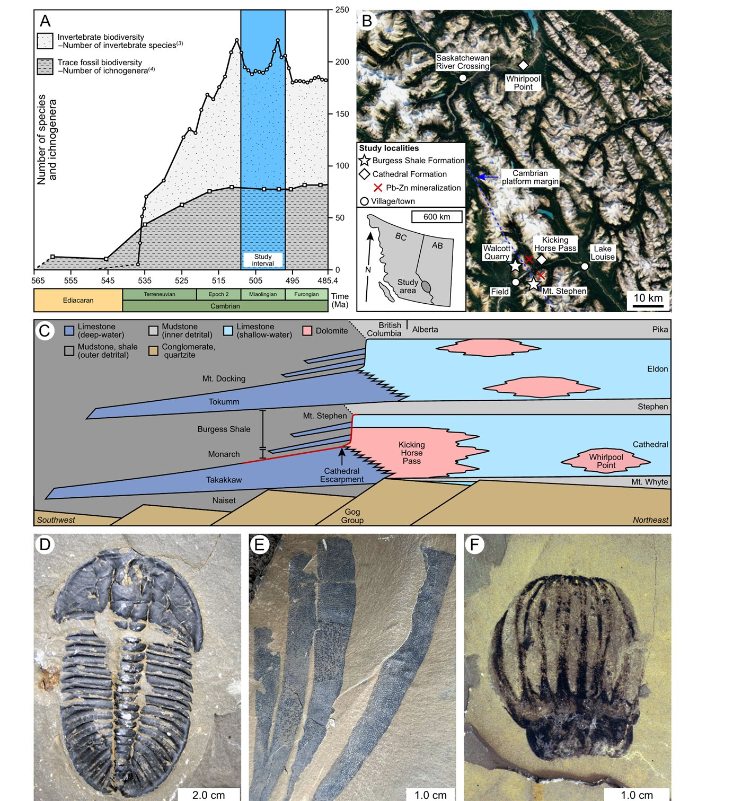
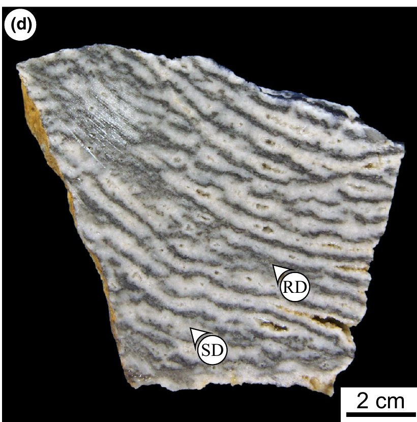
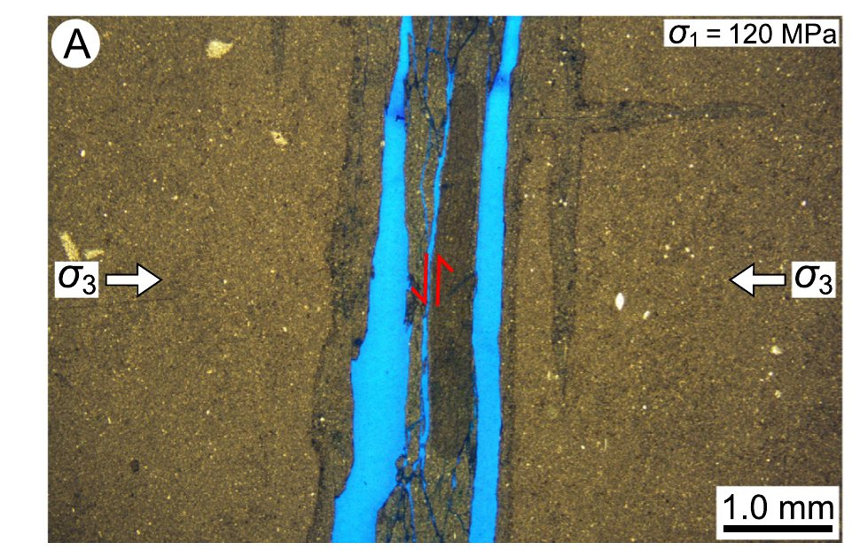

Structurally-Controlled Hydrothermal Dolomitization
A multi-method attack on one geological problem: how fault-hosted hydrothermal fluids transform limestone into dolomite, what it looks like, why it forms the way it does, and precisely when it happened.
Overview
My Ph.D. research (The University of Manchester, with Dr. Cathy Hollis and Dr. Ernest H. Rutter) focused on fault-controlled hydrothermal dolomite bodies hosted in Middle Cambrian strata of the southern Rocky Mountains, western Canada. These dolomite bodies form where hot, mineral-rich fluids exploit deep fault systems, dissolving and replacing the surrounding limestone and precipitating the distinctive banded “zebra texture” that makes them so recognizable in outcrop and core. Rather than studying this system with a single method, I built a four-part, complementary research program that moves from description to mechanism to timing:
- Imaging: shortwave infrared hyperspectral scanning of drill core to rapidly and non-destructively map multiple generations of dolomite growth, revealing compositional zoning invisible to the naked eye.
- Mapping: basin-scale structural analysis showing how the intensity and style of zebra-textured dolomite varies systematically with proximity to the controlling fault systems.
- Timing: direct U–Pb geochronology of the dolomite itself, showing that this hydrothermal fluid flow was coeval with deposition of the world-famous Burgess Shale lagerstätte, raising the possibility that hydrothermal brine seeps helped support the exceptionally preserved Cambrian ecosystems nearby.
- Mechanism: detailed petrographic and geochemical work resolving the coupled dissolution–replacement–deformation–cementation processes that build zebra texture band by band.
This body of work has been recognized with the Harold Reading Medal (Basin Research, most outstanding publication by a graduate student) and the Ramsey Medal (Earth and Planetary Science Letters, most outstanding publication in structural geology & tectonics).
Methodological Foundation: Experimental Rock Mechanics
Interpreting how zebra texture builds band by band required first understanding how the host limestone itself fractures under stress. Early in my Ph.D., I ran triaxial deformation experiments with Dr. Ernest H. Rutter on Carrara marble and Solnhofen limestone, testing for a debated “hybrid” fracture mode between pure shear and pure extension. That data-rich mechanical framework, published as its own study and awarded the BP Prize for best presentation at the Tectonic Studies Group AGM, became the experimental foundation for the fracture-controlled fluid-flow model behind the 2025 EPSL paper.
Key Figures


